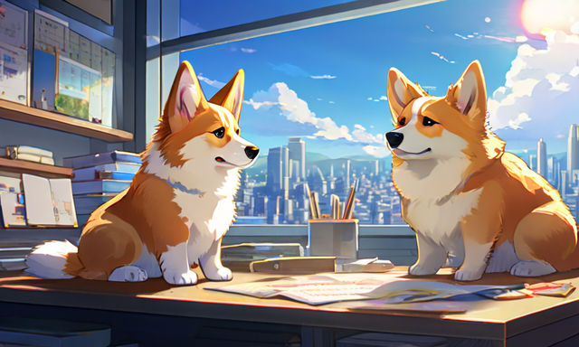
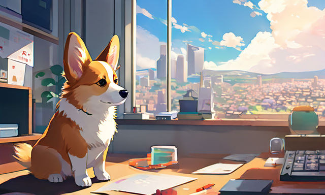
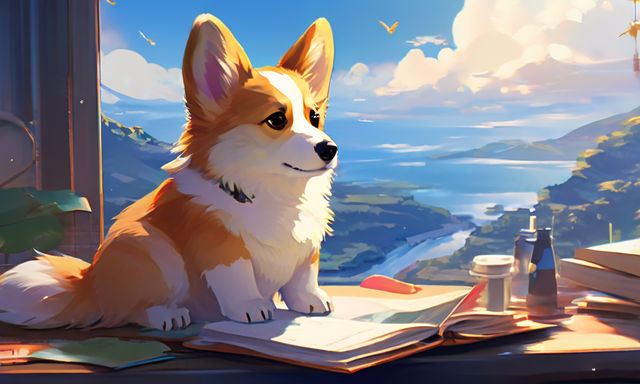
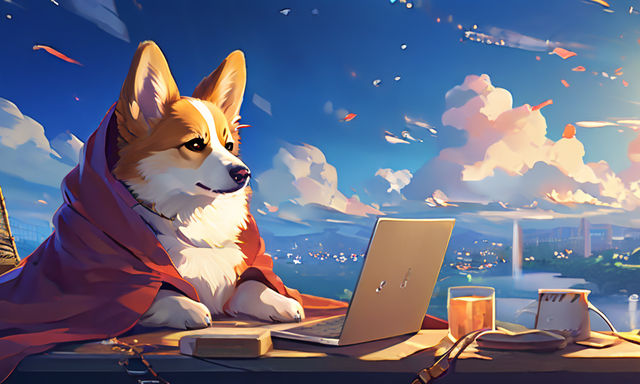
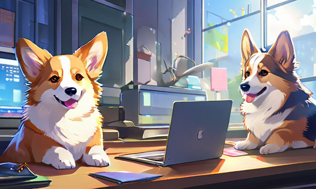
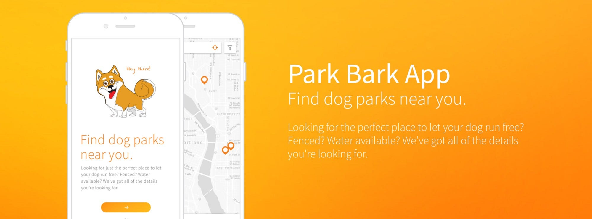
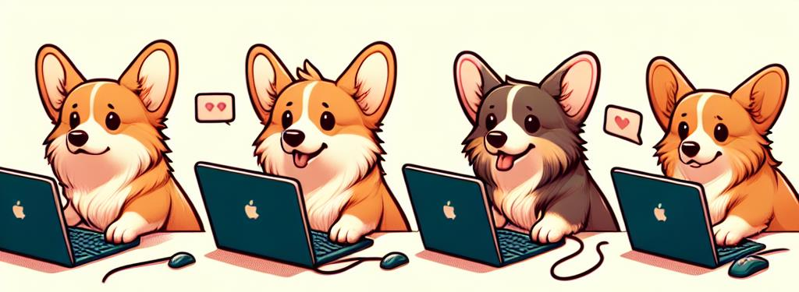

Scrum Framework
A Corgi's Guide to Agile Development

SCRUM
- Adapting 🤸🏻
- Overcoming 🏋️♀️
- Collaborating 🤝🏻
Barkley

Product Owner
Whiskers

Scrum Master
Fuzz

Developer
Paws and Snout

Developers
Mission
Develop a dog park locator app

Sprint Planning
- Sprint Goal 🎯
- Product Backlog 📋
- User Stories 📜
Daily Scrum
- Daily Standup 🤹
- Team Synchronization 🧑🤝🧑
- Progress Updates ✔️
Sprint Execution
- Development Work 👨🏼💻
- Collaboration 🙏
- Scrum Board 📊
Sprint Review and Retrospective
- Increment ⚙️
- Feedback ⭐
- Future Work 🔮
Let's have paw-erful Scrum sessions!
